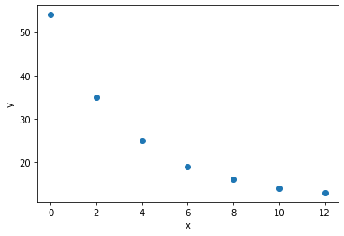

Kurvetilpassing¶
Tilpassing av kurver med curve_fit frå SciPy
Importerer nødvendige bibliotek
import numpy as np
import matplotlib.pyplot as plt
from scipy.optimize import curve_fit
Legg inn data og plottar dei
# legg inn datasettet
x_data = [0, 2, 4, 6, 8, 10, 12]
y_data = [54, 35, 25, 19, 16, 14, 13]
# plottar datasettet som punkt i koordinatsystemet
plt.plot(x_data, y_data, 'o')
plt.xlabel("x")
plt.ylabel("y")
plt.show()

Eksponentialfunksjon¶
Eksponentialfunksjonar er på forma $\(f(x)=a\cdot b^x\)$ altså der variabelen er ein eksponent.
For å tilpassa eksponentialfunksjonen som passar best til datamaterialet kan me bruka curve_fit.
Startar med å definera ein generell eksponentialfunksjon.
# eksponentialfunksjon, generell
def f(x, a, b):
return a*b**x
# tilpassing
K, E = curve_fit(f, x_data, y_data)
a, b = K
# Skriv ut koeffesientane
print("a =", round(a, 2))
print("b =", round(b, 2))
# Plottar grafen til den tilpassa funksjonen
x_verdi = np.linspace(0,12,100)
y_verdi = f(x_verdi, a, b)
plt.plot(x_data, y_data, 'o')
plt.plot(x_verdi, y_verdi)
plt.show()
a = 50.87
b = 0.86
Potensfunksjon¶
Potensfunksjonar er på forma $\(f(x)=a\cdot x^b\)$ Her er variabelen grunntalet i ein potens. Her òg kan me bruka curve_fit.
x_data = [4, 8, 12, 16, 20, 23]
y_data = [386, 1016, 2275, 3816, 7510, 10100]
#plottar datasettet som punkt i koordinatsystemet
plt.plot(x_data, y_data, 'o')
def f(x, a, b):
return a*x**b
K, E = curve_fit(f, x_data, y_data)
a, b = K
print("a =", round(a, 2))
print("b =", round(b, 2))
x_verdi = np.linspace(x_data[0], x_data[-1], 100)
y_verdi = f(x_verdi, a, b)
plt.plot(x_data, y_data, 'o', label = "datapunkt")
plt.plot(x_verdi, y_verdi, label = "modell")
plt.title("Datapunkt og modell", fontsize = 16)
plt.legend()
plt.grid()
plt.show()
a = 5.6
b = 2.39